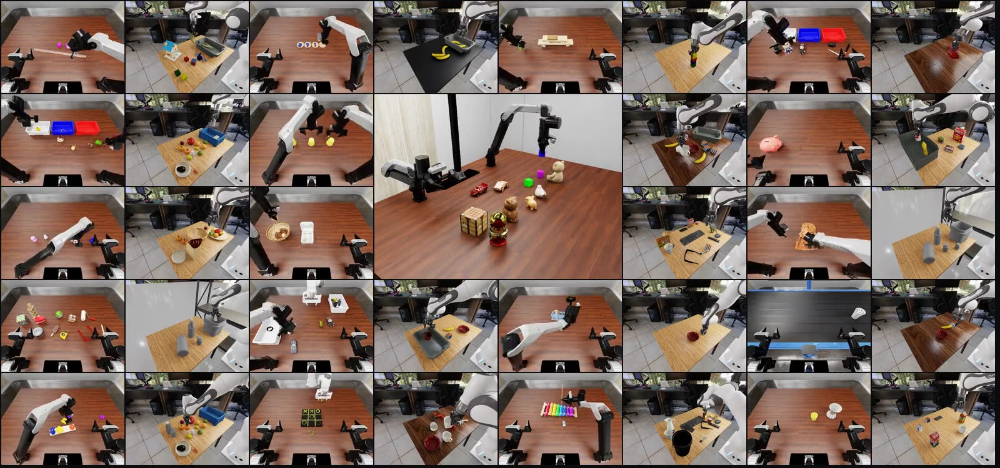
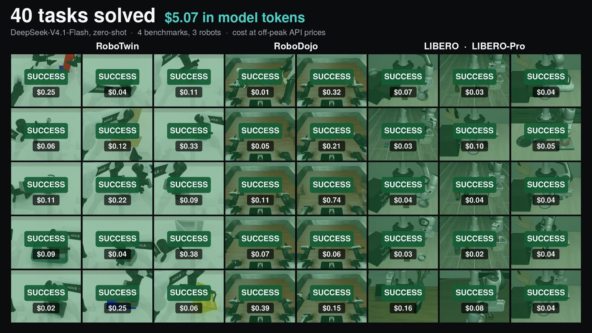

Open models operate robots. Zero-shot.
ORA is an open harness for robot use. The model looks, reasons and writes programs; a supervisor admits every motion; every run is sealed and can be replayed.
curl -fsSL https://raw.githubusercontent.com/hao-ai-lab/ORA/main/scripts/install.sh | sh
ora providers key DEEPSEEK_LOW_API_KEY # any OpenAI-compatible or Anthropic endpoint ora play --env synthetic # no GPU: give a robot instructions
ora setup --env robodojo # simulator, assets, sandbox ora run --env robodojo --task general_pickup --confirm-launch
One success per task on RoboDojo and RoboLab. Centre: a code-mode free-play session, replayed from its records, with a change of plan mid-task.
Code mode
Programs, not just calls.
Each turn the agent can write a short program against the same tools: measure, move, check its own work, and keep what it learned in a workspace that lasts the whole episode.
- Tools as a library, inside a sandbox
- Helpers written once, imported in later turns
- Every motion still goes through the supervisor
Free play
Talk to it while it works.
Built on the Pi coding-agent core. Load a scene with no task, give an instruction, and change your mind halfway: the agent reads the new message before its next step and adapts.
- Terminal or browser
- Steer, queue or stop at any time
- Your own models, skills and AGENTS.md
Authority
The supervisor decides what moves.
The model proposes; the supervisor admits or refuses each motion, one at a time, and answers with a receipt. The model sees only public observations and tools: no simulator ground truth, no success predicate.
Evidence
Every number has a run behind it.
Each request, action and receipt is hash-bound and sealed with the run. Results point to runs you can open, audit and replay.
plan.json · what was resolved and pinned
agent-events.jsonl · every request, reply and tool call
events.jsonl · every action and its receipt
replay-program/ · the run as a replayable program
evaluation.json · the benchmark's own verdict
seal.json · hashes that bind it all
One harness. Many simulators, robots and models.
Independent backends behind one interface; any OpenAI-compatible or Anthropic model.
Simulators
Robots
Models
From the blog
All posts →
Robot-use agents can write code now
Code mode lets the agent write and run programs against the same harness: DeepSeek-V4.1-Flash solves 40% of RoboDojo zero-shot, without exploration. How agents behave with code, the tools they build for themselves, and three open models in both modes.

ORA: Open Robot-Use Agents
An open robot-use harness that connects open-weight language models to robots through perception and motion tools, with no VLA and no robot training.